Personas
Miembros actuales
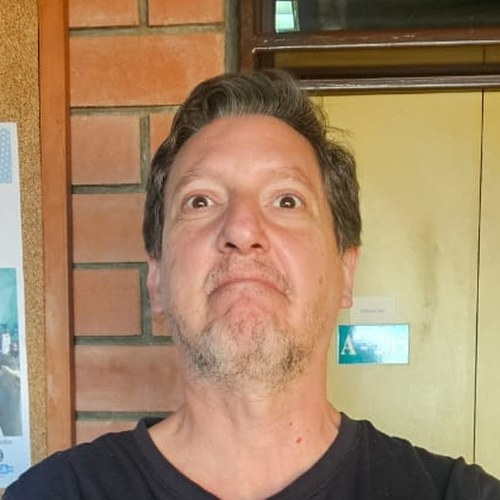
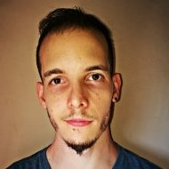
Máximo Coppola
CNEA 
Docencia: Departamento de Física, FCEN-UBA
Física hadrónica y materia densa
Miembro desde 2023
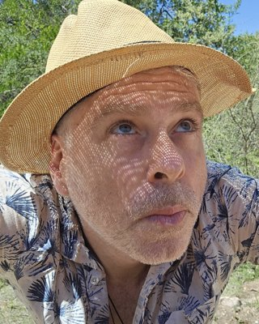
Leonardo Ermann
Jefe del DepartamentoCNEA · CONICET (Independiente) 

Docencia: ECyT, UNSAM
Caos cuántico y sistemas complejos
Miembro desde 2011
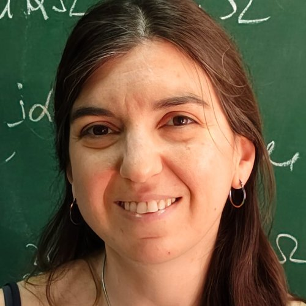
María Florencia Izzo Villafañe
CNEA 
Física hadrónica y materia densa
Miembro desde 2023
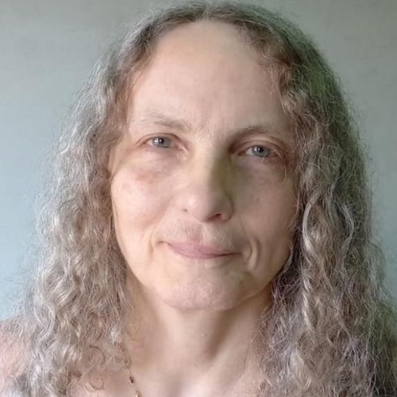
Viviana P. Ramunni
CONICET (Independiente) 
Física computacional de materiales
Miembro desde 2026

Alejandro M. F. Rivas
CONICET (Independiente) 
Caos cuántico y sistemas complejos
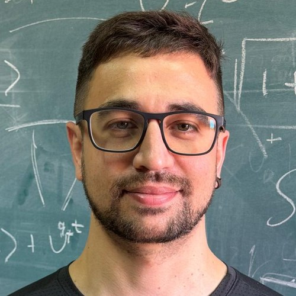
Investigadores consultos
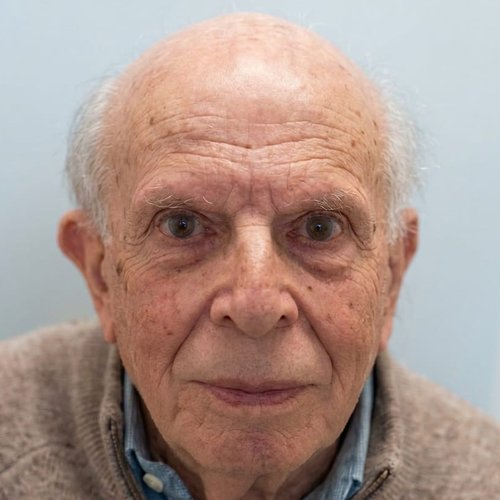
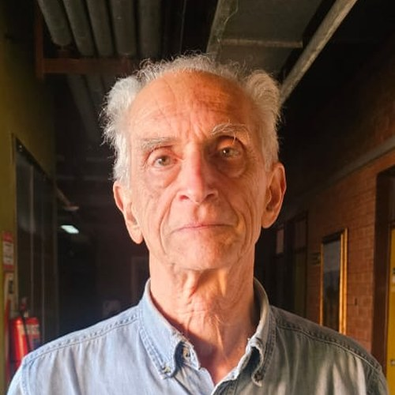
Marcos Saraceno
Consulto, CNEA 
Docencia: ECyT, UNSAM
Caos cuántico y sistemas complejos
Consulto desde 2016
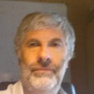
Norberto N. Scoccola
Consulto, CNEA · CONICET 

Física hadrónica y materia densa
Consulto desde 2025
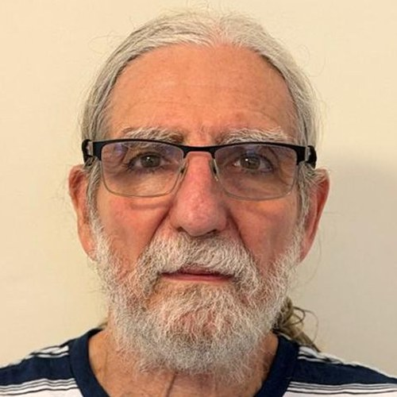
Eduardo G. Vergini
Consulto, CNEA 
Docencia: ECyT, UNSAM
Caos cuántico y sistemas complejos
Consulto desde 2026

Guillermo R. Zemba
Consulto, CNEA · CONICET 

Docencia: Facultad de Ingeniería y Ciencias Agrarias, UCA
Teoría de campos y materia condensada
Consulto desde 2025
Becarios
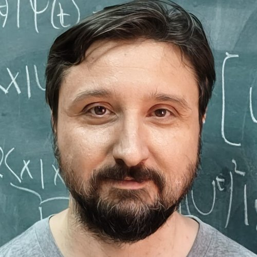
Sebastián A. Ferraris
Becario, CNEA 
Docencia: Facultad de Ingeniería y Ciencias Agrarias, UCA
Física hadrónica y materia densa
Miembro desde 2023
Ex miembros

Daniel R. Bes
Estructura y reacciones nucleares
In memoriam · 1931–2023

Ana Gabriela Grunfeld
Física hadrónica y materia densa
Miembro hasta 2026

Ex doctorandos
Emiliano J. González de Urreta
Física hadrónica y materia densa
Miembro hasta 2014
Doctorado con Norberto N. Scoccola
Tesis (2015): Bariones en la expansión en la inversa del número de colores de la cromodinámica cuántica
Valeria P. Pagura
Física hadrónica y materia densa
Miembro hasta 2019
Doctorado con Norberto N. Scoccola
Tesis (2013): Modelos de quarks no locales a temperatura y potencial químico finitos: diagrama de fases y observables hadrónicos
Juan Pedrosa
Caos cuántico y sistemas complejos
Miembro hasta 2012
Doctorado con Gabriel G. Carlo
Tesis (2013): Hacia una aproximación semiclásica de los sistemas caóticos de scattering
Lisandro A. Raviola
Caos cuántico y sistemas complejos
Miembro hasta 2011
Doctorado con Gabriel G. Carlo y Alejandro M. F. Rivas
Gustavo Aníbal Contrera
Doctorado con Norberto N. Scoccola
Tesis (2011): Estudio de propiedades hadrónicas y de materia de quarks en modelos efectivos de quarks con interacciones no locales
David M. Schneider
Estructura y reacciones nucleares
Miembro hasta 2008
Doctorado con Eduardo G. Vergini y Alejandro M. F. Rivas · Posdoc con Eduardo G. Vergini
Tesis (2007): Elementos de matriz en sistemas clásicamente caóticos. Aplicaciones al mapa del gato
Ignacio Urrutia
Líquidos cuánticos y mecánica estadística
Miembro hasta 2018
Doctorado con Leszek Szybisz
Fernando Simonotti
Doctorado con Marcos Saraceno
Tesis (2000): Autofunciones del billar de Bunimovich en representación de estados coherentes
Luis Martín Kruczenski Gainza
Doctorado con Norberto N. Scoccola
Tesis (1998): Aspectos cuánticos de los solitones en teorías de campos
Juan Pedro Garrahan
Doctorado con Daniel R. Bes
Tesis (1997): Tratamiento BRST lagrangiano de coordenadas colectivas
María Rosa Spinella
Doctorado con O. Dragún
Tesis (1997): Dispersión de electrones de baja energía por agregados metálicos
Carlos Schat
Doctorado con Norberto N. Scoccola
Tesis (1996): Propiedades electromagnéticas y fuertes de los hiperones en el modelo solitónico de estados ligados
Esteban Seva
Doctorado con Hugo M. Sofía
Tesis (1996): Ancho de dispersión de las resonancias multipolares gigantes
Raúl Vallejos
Doctorado con Marcos Saraceno
Tesis (1995): Cuantización semiclásica de mapas ergódicos
Fermín Aldabe
Doctorado con Daniel R. Bes
Tesis (1994): Aplicación de invariancia BRST para la cuantización de solitones
Eduardo Izquierdo
Doctorado con A. Gattone
Tesis (1994): Corrientes axiales en teorías de campo hadrónicas
Marcelo Chiapparini
Doctorado con A. Gattone
Tesis (1991): Relatividad en física nuclear: efecto del medio en núcleos e hipernúcleos
Horacio Fortunato
Doctorado con G. Dussel y Hugo M. Sofía
Tesis (1990): Tratamiento térmico de sistemas finitos
Edgardo Ferrán
Doctorado con R. Perazzo
Tesis (1989): Propiedades colectivas del procesamiento neuronal
Jorge Kurchan
Doctorado con Daniel R. Bes
Tesis (1989): Coordenadas colectivas en problemas de muchos cuerpos
Patricio Leboeuf
Doctorado con Marcos Saraceno
Tesis (1989): El límite semiclásico de sistemas clásicamente no integrables
Martín Bernath
Doctorado con O. Dragún
Tesis (1987): Formalismo modificado de canales acoplados en la aproximación de Born para estudiar reacciones nucleares con iones pesados sobre núcleos deformados
Silvia Lenzi
Doctorado con Ernesto E. Maqueda
Tesis (1987): Efectos de contribuciones coherentes de dos o más nucleones en núcleos esféricos y deformados
María Teresa Mehr
Doctorado con Daniel R. Bes
Tesis (1985): Cálculo perturbativo de los momentos de inercia nucleares
Patricia Curutchet
Doctorado con Hugo M. Sofía
Tesis (1985): Decaimiento electromagnético de resonancias gigantes en reacciones entre iones pesados
Armando Ferrero
Doctorado con Ernesto E. Maqueda
Tesis (1975): Reacciones (d, 6Li): análisis con canales acoplados
Ex posdocs
Cintia T. Willemyns
Física hadrónica y materia densa
Miembro hasta 2020
Posdoc con Norberto N. Scoccola
David M. Schneider
Estructura y reacciones nucleares
Miembro hasta 2008
Doctorado con Eduardo G. Vergini y Alejandro M. F. Rivas · Posdoc con Eduardo G. Vergini
Tesis (2007): Elementos de matriz en sistemas clásicamente caóticos. Aplicaciones al mapa del gato
Colaboradores
Científicos con tres o más publicaciones en común con nuestros investigadores desde el año 2000.
- D. Gómez Dumm ORCIDcon Coppola, Ferraris, Izzo Villafañe, Scoccola
- F. Borondo Web ORCIDcon Carlo, Ermann, Rivas, Saraceno, Vergini
- D. L. Shepelyansky Web ORCIDcon Carlo, Ermann, Vergini
- R. M. Benito Web ORCIDcon Carlo, Ermann, Saraceno, Vergini
- J. L. Goity Web ORCIDcon Scoccola
- S. Noguera Web ORCIDcon Coppola, Izzo Villafañe, Scoccola
- D. A. Wisniacki ORCIDcon Carlo, Ermann, Rivas, Saraceno, Vergini
- J. P. Carlomagno ORCIDcon Ferraris, Izzo Villafañe, Scoccola
- F. L. Bottesi ORCIDcon Zemba
- J. P. Paz ORCIDcon Ermann, Saraceno
- A. Troper ORCIDcon Ramunni, Rivas
- D. B. Blaschke ORCIDcon Scoccola
- K. M. Frahm ORCIDcon Ermann
- J. Montes ORCIDcon Carlo, Ermann, Rivas
- M. I. Pascuet ORCIDcon Ramunni, Rivas
- F. Revuelta ORCIDcon Vergini
- G. Benenti Web ORCIDcon Carlo
- A. Bruchhausen ORCIDcon Sesin
- A. D. Chepelianskii ORCIDcon Carlo, Ermann
- A. Fainstein ORCIDcon Sesin
- J. R. Fernández ORCIDcon Ramunni
- R. C. Pasianotcon Ramunni
- S. Anguiano ORCIDcon Sesin
- G. Casati ORCIDcon Carlo
- G. M. Japiassúcon Ramunni
- A. Lemaître ORCIDcon Sesin
- G. Lugones ORCIDcon Ferraris, Izzo Villafañe, Scoccola
- A. M. O. de Almeida ORCIDcon Rivas, Saraceno
- S. S. Avancini ORCIDcon Coppola, Scoccola
- P. Bruzzonicon Ramunni
- A. Cappelli ORCIDcon Zemba
- L. Domingo ORCIDcon Carlo
- R. L. S. Farias ORCIDcon Coppola, Scoccola
- C. Hernández Garcíacon Ramunni
- C. P. Jayalathcon Scoccola
- T. Klahn ORCIDcon Scoccola
- C. Miquel ORCIDcon Saraceno
- A. J. Roncaglia ORCIDcon Carlo, Saraceno
- I. Caridi ORCIDcon Ermann
- O. Civitarese ORCIDcon Maqueda, Scoccola
- C. Cormick ORCIDcon Ermann, Saraceno
- D. C. Duarte ORCIDcon Coppola, Scoccola
- N. D. Lanzillotti-Kimura ORCIDcon Sesin
- M. G. Orsaria ORCIDcon Scoccola
- D. Poletti ORCIDcon Carlo, Ermann, Rivas
- R. Prioli ORCIDcon Rivas
- W. R. Tavares ORCIDcon Coppola, Scoccola
- V. Villafañe Scholar ORCIDcon Sesin